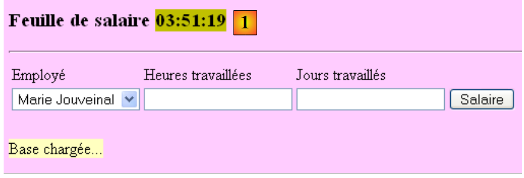

5. A aplicação [SimuPaie] – versão 2 – AJAX / ASP.NET
5.1. Introdução
A tecnologia AJAX (Asynchronous JavaScript and XML) combina um conjunto de tecnologias:
- JavaScript: Uma página HTML apresentada num navegador pode incorporar código JavaScript. Este código é executado pelo navegador se o utilizador não tiver desativado a execução de JavaScript no seu navegador. Esta tecnologia existe desde os primórdios da Web e tem registado um ressurgimento de interesse desde 2005, graças ao AJAX.
- DOM: Modelo de Objetos do Documento. O código JavaScript incorporado numa página HTML tem acesso ao documento sob a forma de uma árvore de objetos, o DOM. Cada elemento do documento (um campo de entrada, uma tag div com nome, uma tag select, etc.) é representado por um nó na árvore. O código JavaScript pode alterar o documento apresentado modificando o DOM. Por exemplo, pode alterar o texto apresentado num campo de entrada através do nó DOM que representa esse campo.
O AJAX utiliza JavaScript para realizar trocas entre o navegador e o servidor em segundo plano. Para responder a um evento, como o clique num botão, o código JavaScript é executado pelo navegador para enviar um pedido HTTP ao servidor. Este pedido contém parâmetros que indicam ao servidor o que deve fazer. O servidor executa então a ação solicitada. Em resposta, envia ao navegador um fluxo HTTP contendo dados que permitem uma atualização parcial da página atualmente exibida. Isto é realizado através do DOM do documento e da execução do código JavaScript incorporado no documento. Os dados devolvidos pelo servidor podem estar em vários formatos: XML, HTML, JSON, texto simples, etc.
A vantagem desta tecnologia reside nesta atualização parcial do documento apresentado. Isto significa:
- menos dados trocados entre o cliente e o servidor, resultando numa resposta mais rápida
- uma interface gráfica mais fluida de utilizar, uma vez que as ações do utilizador não desencadeiam uma recarga completa da página.
Numa intranet onde o tráfego de rede é rápido, o AJAX permite a criação de aplicações web que se comportam de forma semelhante às interfaces tradicionais do Windows. É possível lidar com eventos como uma alteração de seleção numa lista e atualizar imediata e parcialmente a página para refletir essa alteração. O facto de a página não ser totalmente recarregada proporciona ao utilizador a mesma sensação de fluidez que experimenta com as aplicações Windows. No caso das aplicações web, onde os tempos de resposta podem ser longos, a tecnologia AJAX continua a ser utilizável, mas a fluidez percebida depende do desempenho da rede.
O principal desafio do AJAX é a linguagem JavaScript. Criada nos primórdios da Web,
- ela revela-se impraticável para a programação orientada a objetos. Por exemplo, não é uma linguagem tipada. Não se declara o tipo dos dados que estão a ser manipulados. Nesse aspeto, é semelhante a linguagens como Perl ou PHP.
- Não existe um padrão aceite por todos os navegadores. Cada navegador tem as suas próprias extensões JavaScript proprietárias, o que significa que o código JavaScript escrito para o Internet Explorer pode não funcionar no Mozilla Firefox, e vice-versa.
- É difícil de depurar, uma vez que os navegadores não oferecem ferramentas poderosas para depurar o código JavaScript que executam.
Todas estas deficiências do JavaScript significavam que era raramente utilizado antes do advento do AJAX. Assim que se compreendeu o valor de executar código JavaScript em segundo plano — para fazer pedidos HTTP ao servidor web e utilizar a sua resposta para realizar, através do DOM, uma atualização parcial do documento apresentado —, as equipas de desenvolvimento puseram mãos à obra e propuseram frameworks que permitem o AJAX sem exigir que o programador escreva código JavaScript. Para o conseguir, foram desenvolvidas bibliotecas JavaScript capazes de se adaptar ao navegador do cliente. A inserção de código JavaScript na página HTML enviada para o navegador é realizada no lado do servidor, utilizando técnicas que variam consoante a estrutura AJAX utilizada. Estão disponíveis estruturas AJAX para Java, .NET, PHP, Ruby e outras. O AJAX está integrado no Visual Web Developer 2008.
5.2. O projeto Visual Web Developer na camada [ web-ui-ajax]
A nova versão é criada duplicando a versão anterior. Apenas a página [Default.aspx] será modificada.
 |
- Em [1], utilizando o Explorador do Windows, duplique a pasta do projeto [pam-v1-adonet] e renomeie-a para [pam-v2-adonet-ajax]. Em seguida, utilizando o Visual Web Developer, abra o projeto (Ficheiro / Abrir Projeto) a partir desta nova pasta [2]
- Em [3], renomeie-a
 |
- Nas propriedades do novo projeto, altere o nome do assembly [4] e o namespace padrão [5].
Depois de fazer isso, substitua o namespace [pam_v1] pelo namespace [pam_v2] nos ficheiros [Default.aspx, Default.aspx.cs, Default.aspx.designer.cs, Global.asax, Global.asax.cs] para garantir a consistência com o namespace padrão. Por exemplo, [Default.aspx] [6] passa a ser:
<%@ Page Language="C#" AutoEventWireup="true" CodeBehind="Default.aspx.cs" Inherits="pam_v2._Default" %>
...
A página [ Default.aspx] será modificada da seguinte forma:
 |
- Adição de componentes Ajax ao formulário [Default.aspx] (ver [2] acima).
- 2A: O componente <asp:ScriptManager> é necessário para qualquer projeto AJAX
- 2B: O componente <asp:UpdatePanel> é utilizado para definir a área a ser atualizada quando o utilizador envia um pedido POST. Este componente evita que a página inteira seja recarregada.
- 2C: O componente <asp:UpdateProgress> é utilizado para apresentar texto ou uma imagem durante a atualização, a fim de notificar o utilizador, conforme ilustrado abaixo:
 |
- (continuação)
- 2D: Um controlo Label denominado LabelHeureLoad que irá exibir a hora em que o manipulador de eventos Load da página é executado.
- 2E: Um Label chamado LabelHeureSalaire que exibirá a hora em que o manipulador de eventos Click do botão [Salaire] é executado. Queremos demonstrar que o Ajax não recarrega a página inteira quando o botão [Salaire] é clicado. Isto é mostrado na captura de ecrã anterior, onde se podem ver duas horas diferentes nos dois Labels.
A anterior «ajaxificação» do formulário pode ser feita diretamente no código-fonte de [Default.aspx] adicionando tags de extensão Ajax:
...
<body style="text-align: left" bgcolor="#ffccff">
<h3>
Feuille de salaire
<asp:Label ID="LabelHeureLoad" runat="server" BackColor="#C0C000"></asp:Label></h3>
<hr />
<form id="form1" runat="server">
<asp:ScriptManager ID="ScriptManager1" runat="server" EnablePartialRendering="true" />
<asp:UpdatePanel runat="server" ID="UpdatePanelPam" UpdateMode="Conditional">
<ContentTemplate>
<div>
<table>
<tr>
...
<tr>
<td>
<asp:DropDownList ID="ComboBoxEmployes" runat="server">
</asp:DropDownList></td>
<td>
<asp:TextBox ID="TextBoxHeures" runat="server" EnableViewState="False">
</asp:TextBox></td>
<td>
<asp:TextBox ID="TextBoxJours" runat="server" EnableViewState="False">
</asp:TextBox></td>
<td>
<asp:Button ID="ButtonSalaire" runat="server" Text="Salaire" CausesValidation="False" /></td>
<td> <asp:UpdateProgress ID="UpdateProgress1" runat="server">
<ProgressTemplate>
<img src="images/indicator.gif" />
<asp:Label ID="Label5" runat="server" BackColor="#FF8000" EnableViewState="False"
Text="Calcul en cours. Patientez ...."></asp:Label>
</ProgressTemplate>
</asp:UpdateProgress>
<asp:Label ID="LabelHeureSalaire" runat="server" BackColor="#C0C000"></asp:Label></td>
</tr>
<tr>
...
</tr>
</table>
</div>
<br />
....
<table>
<tr>
<td>
Salaire net à payer :
</td>
<td align="center" bgcolor="#C0C000" height="20px">
<asp:Label ID="LabelSN" runat="server" EnableViewState="False"></asp:Label></td>
</tr>
</table>
</asp:Panel>
</ContentTemplate>
</asp:UpdatePanel>
</form>
</body>
</html>
- Linha 8: Qualquer formulário compatível com Ajax deve incluir a tag <asp:ScriptManager>. Esta tag permite a utilização de novos componentes Ajax:
 |
- A tag <asp:ScriptManager> pode ser adicionada clicando duas vezes no componente [ScriptManager] acima. Certifique-se de que esta tag está contida dentro da tag <form> no código-fonte. O atributo [EnablePartialRendering="true"] na linha 8 está ausente por predefinição. Uma vez que "true" é o seu valor predefinido, não é estritamente necessário.
- Linha 9: A tag <asp:UpdatePanel> é utilizada para delimitar as áreas da página que precisam de ser atualizadas durante uma atualização parcial da página. O atributo [UpdateMode="Conditional"] indica que a área só deve ser atualizada em resposta a um evento AJAX proveniente de um componente dentro da área. O outro valor é [UpdateMode="Always"], que é o padrão. Com este atributo, a área do UpdatePanel é atualizada sistematicamente, mesmo que o evento AJAX que ocorreu tenha se originado de um componente em outra área do UpdatePanel. Geralmente, este comportamento é indesejável.
A tag <asp:UpdatePanel> suporta duas tags filhas: <ContentTemplate> e <Triggers>.
- As tags <asp:ContentTemplate> nas linhas 10 e 53 definem a área da página a ser parcialmente atualizada.
- Linhas 27–33: Um componente Ajax <asp:UpdateProgress> que exibe texto durante todo o processo de atualização da página. Por exemplo, clicar no botão [Salário] aciona um pedido POST em segundo plano. O navegador não exibe o ícone da ampulheta, pelo que o utilizador pode sentir-se tentado a continuar a utilizar o formulário. A tag <asp:UpdateProgress> exibe texto indicando que a página está a ser atualizada. Também é possível exibir uma imagem. Aqui, são exibidas uma imagem animada (linha 29) e texto (linhas 30–31):
 |
- linhas 28–32: a tag <ProgressTemplate> delimita o conteúdo que será exibido durante a atualização do UpdatePanel em que a tag UpdateProgress se encontra.
- linhas 29–31: a imagem animada e o texto que serão exibidos durante a atualização do UpdatePanel.
- linha 5: o rótulo LabelHeureLoad é colocado fora da área habilitada para AJAX
- linha 34: o rótulo LabelHeureSalaire é colocado dentro da área habilitada para AJAX
O código da página [ Default.aspx.cs] é alterado da seguinte forma:
protected void Page_Load(object sender, System.EventArgs e)
{
// time of each page load
LabelHeureLoad.Text = DateTime.Now.ToString("hh:mm:ss");
// initial request processing
if (!IsPostBack)
{
....
}
- Linha 4: Atualizar o tempo de carregamento da página
protected void ButtonSalaire_Click(object sender, System.EventArgs e)
{
// hourly wage calculation
LabelHeureSalaire.Text = DateTime.Now.ToString("hh:mm:ss");
// data verification
....
}
- linha 4: atualizar a hora de cálculo do salário
Para concluir a página [Default.aspx], precisamos de incluir a imagem animada referenciada pela linha 4 do código-fonte seguinte na página:
<td>
<asp:UpdateProgress ID="UpdateProgress1" runat="server">
<ProgressTemplate>
<img src="images/indicator.gif" />
<asp:Label ID="Label5" runat="server" BackColor="#FF8000" EnableViewState="False"
Text="Calcul en cours. Patientez ...."></asp:Label>
</ProgressTemplate>
</asp:UpdateProgress>
<asp:Label ID="LabelHeureSalaire" runat="server" BackColor="#C0C000"></asp:Label>
</td>
Utilizando o Explorador do Windows, adicionamos o ficheiro [images/indicator.gif] à pasta do projeto [1]:
 |
- Em [2], exibimos todos os ficheiros do projeto
- Em [3], selecione a pasta [images]
- Em [4], incluímos a pasta [images] no projeto
 |
- em [5], a pasta [images] foi incluída no projeto
- Em [6], ocultamos os ficheiros que não fazem parte do projeto
- em [7], o novo projeto
5.3. Testar a solução Ajax
Quando executa o projeto (CTRL-F5), obtém a seguinte página:
 |
- em [1], o tempo de carregamento da página
Teste a aplicação e verifique se o botão [Salário] não faz com que a página seja recarregada na totalidade. Pode verificar isto comparando o tempo apresentado para o processamento do clique no botão [Salário] [2], que não é o mesmo que o tempo em que a página foi inicialmente carregada [3]:
 |
Repita os testes definindo a propriedade EnablePartialRendering do componente ScriptManager1 como False:
 |
Note que o comportamento agora assemelha-se ao de uma página não AJAX. A página é recarregada na totalidade quando se clica no botão [Salário]. Repita os testes utilizando um navegador diferente. O objetivo dos testes entre navegadores é demonstrar que o JavaScript gerado pelos componentes de servidor ASP/AJAX é interpretado corretamente por diferentes navegadores.
Por fim, vamos destacar o papel da tag <asp:UpdateProgress>. No código do procedimento [ButtonSalaire_Click] em [Default.aspx.cs], adicione uma instrução que pause o procedimento por 3 segundos:
using System.Threading;
...
protected void ButtonSalaire_Click(object sender, System.EventArgs e)
{
// hourly wage calculation
LabelHeureSalaire.Text = DateTime.Now.ToString("hh:mm:ss");
// waiting
Thread.Sleep(3000);
// data verification
....
}
A linha 8 faz com que o segmento de código que executa o procedimento [ButtonSalaire_Click] aguarde 5 segundos. Depois de fazer isso, vamos executar os testes novamente (após definir a propriedade EnablePartialRendering do componente ScriptManager1 como True). Desta vez, vemos o texto de [UpdateProgress], bem como a imagem animada, enquanto o salário está a ser calculado:

5.4. Conclusão
O estudo anterior mostrou-nos que é possível adicionar funcionalidades AJAX a aplicações ASP.NET existentes. As extensões ASP.NET AJAX vão além do que acabámos de ver. Convidamos os leitores a visitar o site [http://ajax.asp.net].